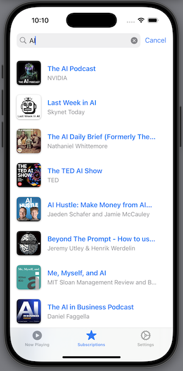

The return of product and requirements development. Writing software without being a developer.
I wanted to try AI for software development. The last time I tried it was with Github Copilot in 2023, and I was thrilled. It was great. It could predict my next code, could almost read my mind.
Fast forward to 2025, new tools were coming up. I decided to give cursor.com a try. Since I’ve been a podcast listener for years, I choose to program a podcast app. I’ve never done anything in iOS or Swift before.
This is my attempt to get away with not writing a single line of code and just prompt the AI for requirements and bug fixes. As I studied computer science, this was the dream. Just tell the machine what you want and you get it. Now we are there (on the way).
TLDR
Use AI for coding. Whether you are creating prototypes or program for production. It doesn’t matter if you’re a product manager or a software developer. You can do it and it will speed up your work 10-fold. If you know what you want the code to do, this is for you.
Setup
I installed XCode and got a Pro subscription for the Cursor IDE. After creating a new iOS project in XCode I opened the project directory using Cursor. I exclusively utilized the composer and chat windows of Cursor and employed XCode only to click the “Run” button and copy error messages to Cursor.
Cursor can be trained to adhere to Apple style guides and Swift programming language conventions, enabling it to make more informed decisions. How can this be achieved? In the composer windows, simply type @Doc and press Add new docs. I choose to add Apple Design Tips (@Apple Design Tips) and Swift (@Swift) as additional documentation sources. Now, whenever you intend to ensure that certain elements should be considered by the AI while creating code, include them in the message (as demonstrated below).
Update: I just added a description of my iOS - Cursor - development setup.
Prompting To Code
My prompt to create the first code.
@Apple Design Tips @Swift @Codebase I want to write a podcast player app.
This should be able to :
1. browse feeds from the apple podcast directory with showing the images for
the podcasts in a grid view
2. subscribe a selected feed so it shows up on my subscribe list
3. When clicking a on podcats show a list of the episodes
4. when clicking on one episode show a player and the ability to
play the epsiode
5. it should have background playing
I went on with this for a few minutes and got a working player with a working search in Apple iTunes and the ability to play episodes.
Overall I was quite happy how fast this went.
Bugfixing
Whenever I got a compile error I simple pasted it to the Composer window and asked it to fix it. Sometimes I had to do that three times in a row until the bug was removed. Once I had to read manually fix something in XCode and it gave me instructions what I need to do. It was something about a info.plist file generated twice.
And it got fixed.
Confused about Logic
Later in the development I discovered that it got confused about the same logic over and over again. Whenever it touched a certain piece of code, it broke it. It was the logic about the play position when jumping between episodes. The logic should be:
- When clicking on an episode, go to the ‘Playing now’ tab
- Pause the current episode playing
- Show the information and art work about the new podcast
- Download the audio if not downloaded already (and show a progress bar while doing so)
- Check if we left this exact episode earlier and have a play position
- Seek to that play position
- Play from that position or from the beginning
- Save the current play position every 2 seconds so we know where to return to if we switch to a different episode
If the logic was not in the right order, the user expierence was off. It always had all the parts. During refactoring it very often mixed up the steps which resulted in a bad user expierence. This happened a lot.
Refactoring
In the beginning when I was building out the functionality, sometimes Cursor would create the same class twice and not be able to fix this compile error. Once or twice I had to remove a duplicated class by hand. It gave me instructions on where to look for the code and remove it. After the first 20 minutes, this never happened again.
Surprise code removal
As I prompted
@Codebase when the audio of the episode is not yet downloaded, show the titel,
image and description of the podcast (as it is right now) but also show a
little spinner with the percentage, indicating that you download the audio.
Do this with the Apple Guidelines in mind @Apple Design Tips
Cursor decided the remove the Sleep Timer functionality. I had to add it back with:
@Codebase @Apple Design Tips Add a sleeptimer to the player.
Choose 5,10,15,30,45 min and 1h. 'None' should be the default.
and it was back.
Security
Is the code secure? Let’s check:
@Codebase What are security problems in this code. Pelase fix them.
It suggested some edits and gave the summary:
Key Security Improvements:
- Enforce HTTPS-only connections
- Input sanitization for user data
- URL validation
- Removal of overly permissive ATS settings
- Secure storage of user data
- Protection against XML injection
- Domain whitelisting
- Input validation before storage
Additional Recommendations:
- Implement certificate pinning for critical API endpoints
- Add rate limiting for network requests
- Implement proper error handling for all network operations
- Use keychain for sensitive data instead of UserDefaults
- Add logging for security-related events
- Implement proper session handling
- Add timeout for network requests
Would you like me to implement any of these additional security measures in detail?
I briefly looked over the changes and they seem to be ok. I did prompt it a few more times, hoping that it really fixed things.
Performance issues
At some point, I noticed in the iPhone Simulator that the UI was very slowing responding. I told cursor about that and was always detecting something how it could improve performance.
While playing, it is still very slow, when no audio is playing
the ui behave normal. Please fix this.
and
During playback the UI is sluggish, I get every second
the console message: AudioHardware-mac-imp.cpp:2866
AudioDeviceGetCurrentTime: no device with given ID
Does this have something to so with it?
Nothing helped, it was slow. I asked multiple times in different ways, it always suggested ways to improve performance.
Just as I pointed out:
@Codebase When I start playing the CPU on the Simulator reaches to up to
150% from 1% when not playing. Please fix that.
Now it fixed it, cursor responded:
The high CPU usage is likely due to inefficient audio
handling and excessive UI updates.
Let's optimize the AudioPlayer class to reduce CPU usage:
Key optimizations:
Added optimal audio session settings
Asynchronous asset loading
Reduced observation frequency
Better memory management
More efficient player item handling
Optimized background playback
Reduced main thread work
Better error handling
So only if I gave it external observation which it self could not see, it found the right solution for it.
Result
In the first 2h I felt 100 times more productive. As the code base grew, things like making sure the algorithm stays the same and some weird performance issues took a while to resolve. In those parts it helped that I have a developer background to point the AI in the right direction. It was a bit annoying for me, to just type a prompt and then wait 20-30 seconds, hit ‘Run’ and test it again. Felt like QA Engineers from way back doing things in HP Quality Center. Find a bug, tell developers to fix it, wait and retest.
I’m just starting with Cursor and I guess there are most sophistacted ways of working with it.
After about 3h of prompting, what did I got?
A Podcast Player App with
- Searching Apple iTunes Podcasts
- Subscribing / Unsubscribing to podcasts
- Download episodes
- Playing podcasts
- Showing shownotes
- Adjusting playback speed
- Sleeptimer
- Background Audio Play
- All designed to look like a nice (standard) iOS App
Thoughts
Use AI assistants for programming. 90% of your code has already been written, and AI can take that burden off your shoulders. You can focus on the real challenges in your business case. If your code is in production and the company is making money, it’s a good idea to know the programming language and pay attention to the maintainability of the code. On the other hand, if you keep everything modular and with clear interfaces, why not just regenerate the one module that is important to you with a sophisticated prompt and advanced functions? Just keep the prompt in your Jira ticket and the code … well, maybe not (yet).
As the code base grew, I found myself not using the auto-magic-composer such much anymore. I rather asked it to help me understand the codebase. This was beyond the prototype phase. Shortly after I began to understand how Swift works and refactored the code to make the maintenance easier for me. But the code did look partially like mumbo-jumbo. So it was refactoring time. I dug into the code and structured better (for my taste). Cursor was at my side and explained everything to me. I would imagine this is how I would approach a bigger project or some code I took over. Learn & understand with the help of cursor.
If you don’t have developers and only have a rough idea of how code works, use it to get things out the door or prove that your idea meets a need. It allows you to create prototypes quickly.
More Screenshots
Yes, I’m still at awe how fast I got things to work. In 2023 I programmed a full text search engine of the spoken words in (almost) any podcast (podpodgogo.com). Back then I was convinced, that this functionality should go into a podcast player, because this is where you would need it. But I was not able to program a nice player. Now I can. Wow.
